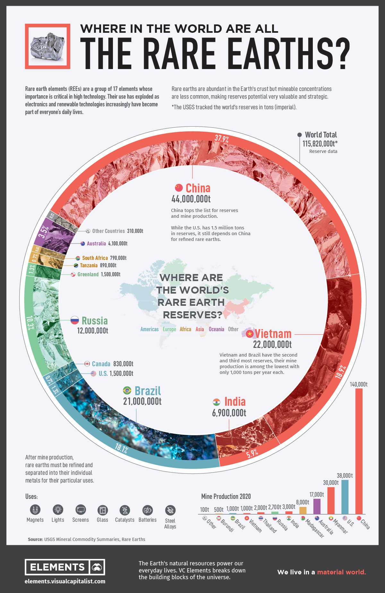

Mapa kluczowych graczy w łańcuchu
Najważniejsza dana: 45455 tony REO (produkcja MP Materials 2024) - "MP Materials produced a record 45,455 metric tons of REO in concentrate in 2024." REO oznacza tlenki ziem rzadkich, a ten wynik pokazuje, że sama skala produkcji nie przesądza jeszcze o rentowności. 2
W skrócie
Łańcuch ziem rzadkich nie jest wyścigiem samych kopalń, bo trwałą przewagę daje dopiero połączenie wydobycia, separacji, produkcji magnesów, finansowania i pewnego odbiorcy. Chiny pozostają punktem odniesienia pod względem skali i kontroli kolejnych etapów, natomiast poza nimi najmocniejszą pozycję budują MP Materials, Lynas oraz projekty wspierane kapitałem państwowym i umowami odbioru. Koszt wejścia sięga setek milionów lub miliardów, a niskie ceny potrafią zamienić rekordową produkcję w stratę. Pieniądze obronne i motoryzacyjne przyspieszają inwestycje, lecz pełny łańcuch powstaje latami, dlatego głównym ryzykiem pozostaje luka między mocą zapowiadaną a rzeczywistą. Dla inwestora oznacza to premię dla graczy zintegrowanych i finansowanych długoterminowo oraz podwyższone ryzyko dla projektów opartych wyłącznie na obietnicy przyszłej skali. 3

Rycina 22: Infografika Visual Capitalist (na podstawie danych USGS) przedstawiająca globalny rozkład zasobów ziem rzadkich według krajów - Chiny, Wietnam, Brazylia, Rosja i inni kluczowi gracze.1
Chiny: cztery centra skali i kontroli
China Northern Rare Earth, powiązana z Baogang, osiągnęła w 2024 r. 177 700 ton wytopu i separacji oraz 58 800 ton materiałów magnetycznych, a przychody 32,966 mld juanów, gdzie mld oznacza miliardy, przełożyły się na 1,004 mld juanów zysku netto. Jej pierwsza kwota wydobywcza 2024 r. wyniosła 94 580 ton wobec krajowego limitu 270 000 ton. Dla inwestora to dowód, że chińska przewaga wynika jednocześnie ze skali przemysłowej i administracyjnej kontroli podaży. 4567
China Rare Earth Group odpowiada za 30% chińskiej produkcji metali ziem rzadkich i 60-70% metali ciężkich, a jego pierwsza kwota wyniosła 40 420 ton. Z kolei Shenghe Resources miał 11,371 mld juanów przychodów, w tym 796 mln juanów z koncentratów, gdzie mln oznacza miliony. Koncentracja ciężkich metali ziem rzadkich i rozbudowane kanały handlowe wzmacniają pozycję negocjacyjną chińskich grup wobec zagranicznych odbiorców. 891011
Xiamen Tungsten wykazał 3,203 mld juanów przychodów segmentu za trzy kwartały i 241 mln juanów zysku za cały 2024 r. W joint venture, czyli wspólnym przedsięwzięciu w Fujian, China Rare Earth Group ma 51%, a Xiamen 49%, przy celu ponad 200 000 ton zasobów REO. Taka konsolidacja zaciera granice między właścicielem zasobów, przetwórcą i narzędziem polityki przemysłowej, co zwiększa ryzyko koncentracji opisane szerzej w Geopolityka i koncentracja łańcucha dostaw. 1213
Upstream poza Chinami: producenci i projekty
Upstream to kopalnie i przygotowanie koncentratu. MP Materials wydobyło w 2024 r. 45 455 ton REO i wyprodukowało 1 294 tony NdPr, czyli tlenku neodymu i prazeodymu do magnesów, lecz przy 203,9 mln USD przychodów, gdzie USD oznacza dolary amerykańskie, poniosło 65,4 mln USD straty netto. Lynas w FY2024, czyli roku finansowym 2024, wyprodukował 10 908 ton REO, w tym 5 655 ton NdPr, uzyskując 463,3 mln AUD przychodów, gdzie AUD oznacza dolary australijskie, i 84,5 mln AUD zysku netto. Zestawienie pokazuje, że podobna pozycja w Wydobycie (upstream) nie oznacza podobnej odporności finansowej, więc inwestor powinien analizować miks produktów i koszty, a nie tylko wolumen. 214
Wśród rozwijanych projektów Iluka planuje Eneabba o mocy 17 500 ton REO rocznie, obniżonej z 23 000 ton, przy capexie, czyli nakładach inwestycyjnych, 1,7-1,8 mld AUD. Arafura projektuje 4 440 ton NdPr rocznie w Nolans przy capexie 1 mld USD. W obu przypadkach wysoki koszt wejścia sprawia, że o wartości dla akcjonariuszy zadecydują dyscyplina inwestycyjna i dostęp do długoterminowego kapitału. 15161718
Hastings wydał na Yangibana 223 mln AUD, lecz na 30 września 2024 r. projekt był ukończony w 33%, a Wyloo przejęło potem 60% przedsięwzięcia. Zmiana właścicielska może ułatwić dokończenie budowy, ale zarazem przypomina, że zapowiadany harmonogram nie chroni inwestora przed rozwodnieniem lub utratą kontroli. 1920
Pensana ma finansowanie 268 mln USD i planuje w Longonjo 20 000 ton MREC rocznie od 2027 r. oraz 40 000 ton od 2029 r. MREC to mieszany węglan ziem rzadkich do dalszej separacji. Projekt może zyskać jako pozachińskie źródło wsadu, ale jego wartość zależy od przejścia z finansowania do terminowej produkcji. 2122
Peak wykazuje w Ngualla 887 000 ton TREO, czyli łącznej zawartości tlenków, i NPV po podatku 1,35 mld USD, przy czym NPV to dzisiejsza wartość przyszłych przepływów. Mkango wylicza NPV Songwe Hill na 339 mln USD, ale Songwe i zakład w Puławach wymagają 597 mln USD przy 2 mln USD gotówki. Wysoka wartość projektu na papierze nie usuwa luki kapitałowej, dlatego inwestor powinien traktować NPV jako punkt wyjścia, a nie substytut zabezpieczonego finansowania. 23242526
Energy Fuels faktycznie wyprodukował 38 000 kg, czyli kilogramów, NdPr wobec docelowej mocy 850-1 000 ton rocznie. USA Rare Earth poniósł 16,4 mln USD straty bez przychodów operacyjnych, choć Stillwater ma dojść do 600 MTPA, czyli ton metrycznych rocznie, i docelowo 10 000 ton magnesów rocznie. Rozbieżność między bieżącą produkcją a mocą docelową premiuje spółki z udokumentowanym rozruchem i obciąża wyceny oparte głównie na planach. 272829
W Brazylii Serra Verde już wytwarza 4 000-5 000 ton TREO rocznie, podczas gdy junior Meteoric raportuje zasób Caldeira 1,6 mld ton i list intencyjny z Ucore na 3 000 ton TREO. Serra Verde zyskuje przewagę wykonawczą, natomiast Meteoric pozostaje ekspozycją na rozwój zasobu, finansowanie i przyszły odbiór. 303132
Midstream i downstream
Midstream to chemiczna separacja i materiały przed gotowym magnesem. Neo Performance Materials osiągnął w 2024 r. 64 mln USD skorygowanej EBITDA, czyli wyniku operacyjnego przed odsetkami, podatkami i amortyzacją, a wynik Magnequench wzrósł o 21%. Solvay, przy 4,7 mld EUR sprzedaży, gdzie EUR oznacza euro, chce do 2030 r. pokrywać 30% europejskiego popytu. Dla inwestora dojrzały przetwórca może być bardziej bezpośrednią ekspozycją na wąskie gardło łańcucha niż projekt dopiero rozwijający kopalnię. 3334
Równolegle Carester pozyskał dla Caremag 216 mln EUR i planuje 600 ton tlenków dysprozu i terbu rocznie. IREL produkuje około 11 000 ton koncentratu rocznie oraz ma moc 4 000 ton REO, w tym około 400 ton NdPr. Te aktywa pokazują, że separacja, rafinacja i metalurgia mogą przechwytywać wartość nawet bez własnej kopalni, choć ich przewaga zależy od stabilnego dostępu do wsadu. 35363738
Downstream oznacza gotowe magnesy. Po chińskiej stronie China Northern raportuje 58 800 ton materiałów magnetycznych, a poza Chinami Neo buduje w Narwie 2 000 ton mocy rocznie z możliwością przekroczenia 5 000 ton. MP łączy Mountain Pass z magnesami, natomiast USA Rare Earth wiąże surowiec Serra Verde ze Stillwater, tworząc integrację mine-to-magnet, czyli kontrolę drogi od kopalni do magnesu. W Łańcuch magnesów trwałych NdFeB i SmCo przewagę powinny zyskiwać firmy kontrolujące jakość, logistykę i odbiór na całej drodze, a tracić dostawcy pojedynczego półproduktu. 53932940
Finansowanie i offtake
Amerykański Departament Obrony, czyli DoD, wnosi do MP 400 mln USD kapitału, docelowo 15% udziału, 150 mln USD pożyczki, podłogę cenową 110 USD/kg NdPr na 10 lat i zakup 7 000 ton magnesów rocznie przez 10 lat. Dane nie wydzielają osobnej kwoty DPA, czyli Defense Production Act. Państwo przejmuje tu część ryzyka cenowego i inwestycyjnego, co sprzyja wybranemu czempionowi, ale utrudnia porównanie jego ekonomiki z projektami finansowanymi rynkowo. 414243
Podobny mechanizm widać w Australii, gdzie Export Finance Australia pożyczyła Iluce 1,65 mld AUD, a Arafura zebrała 1 mld AUD finansowania publicznego. Takie wsparcie zwiększa prawdopodobieństwo realizacji obu projektów, lecz jednocześnie potwierdza, że rynek prywatny nie chce samodzielnie ponosić całego ryzyka. 4445
JOGMEC i Sojitz wsparły Lynas kwotą 250 mln USD w zamian za co najmniej 8 500 ton rocznie przez 10 lat. Fundusz UE współfinansuje Narwę, a unijne rozporządzenie CRMA wyznacza cele 10% wydobycia, 40% przetwarzania i 25% recyklingu własnego zużycia. W praktyce Dywersyfikacja i budowa łańcucha poza Chinami opiera się na połączeniu kapitału publicznego, polityki przemysłowej i gwarantowanego popytu, co premiuje projekty zgodne z interesem strategicznym państw. 463947
Offtake to długoterminowa umowa odbioru. General Motors przedpłacił MP 100 mln USD w 2024 r., a nieujawniony producent samochodów zakontraktował od Iluki 1 200 ton tlenków magnetycznych od 2028 r., gwarantując co najmniej 155 mln USD przychodów. Hastings ma z kolei odbiór 66% produkcji przez ThyssenKrupp oraz 10 000 ton koncentratu rocznie przez 7 lat dla Baotou Sky Rock. Takie umowy zmniejszają ryzyko sprzedaży i ułatwiają finansowanie, ale mogą też oddawać odbiorcy znaczną część przewagi negocjacyjnej. 484950
Właściciele i playbook Shenghe
Shenghe miał 8,4% MP w kwietniu 2025 r., lecz do 30 września udział spadł do 3,1%. Hancock Prospecting Giny Rinehart ma równolegle 8,4% MP, 8,2% Lynas i 10% Arafury. Dla inwestora oznacza to, że mapa właścicielska nie jest dodatkiem do analizy operacyjnej, lecz wskazówką, kto może zapewnić kapitał, wymusić zmianę strategii lub skonsolidować aktywa. 5152535455
Playbook Shenghe łączy mniejszościowy kapitał, know-how, czyli wiedzę procesową, i kontrolę odbioru. W MP Shenghe zaczynał od 9,99% niegłosującego udziału, następnie generował ponad 90% przychodów w 2022 i 2023 r. oraz 80% w 2024 r. W Peak miał 19,7% głosów, a offtake Ngualla obejmował 100% koncentratu i co najmniej 50% produktów przetworzonych przez 7 lat. Peak przyjął wycenę Shenghe 195 mln AUD, odrzucając warunkowe 240 mln AUD od GICP. To kanał, którym chiński kapitał wchodzi do zachodniego juniora, zapewnia sprzedaż i zdobywa wpływ większy niż procent akcji, dlatego formalny udział właścicielski może zaniżać rzeczywistą zależność biznesową. 56575859
Wejście DoD przecięło ten model w MP. Sprzedaż do Chin zatrzymano w lipcu 2025 r., a umowy nie wypowiedziano, lecz wygasła 16 stycznia 2026 r. i nie została przedłużona. Udział Shenghe w przychodach za dziewięć miesięcy 2025 r. spadł do 30%, a MP odsprzedał 49% VREX za 9,7 mln USD. Z punktu widzenia inwestora państwowe wsparcie nie tylko finansuje moce, ale może też szybko przeorientować relacje handlowe i zmienić profil ryzyka kontrahenta. 6060
xychart-beta title "Shenghe w przychodach MP Materials (proc.)" x-axis ["2022-23", "2024", "9M2025"] y-axis "Procent" bar [90, 80, 30]
Rycina 7: Udział Shenghe w przychodach MP Materials (procent).
Struktury offtake i bankowalność projektów
Bank finansujący budowę kopalni ziem rzadkich nie czyta w pierwszej kolejności raportu zasobów - czyta klauzule kontraktu offtake: czy to niewiążące MOU, czy wiążący take-or-pay z przedpłatą. GM przedpłacił MP Materials 100 mln USD w 2024 r. i kolejne 50 mln USD w kwietniu 2025 r. za produkty prekursorowe do magnesów, w ramach długoterminowej umowy z 2021 r. 61 - to bezzwrotny kapitał obrotowy zastępujący dług bankowy. Dla inwestora oznacza to, że offtake staje się częściowym substytutem finansowania budowy. Iluka podpisała swoją pierwszą wiążącą umowę take-or-pay z globalnym producentem samochodów: 1200 t tlenków ziem rzadkich rocznie od 2028 r., gwarantowany przychód min. 155 mln USD przez cztery lata 62 - razem z pełnym dostępem do pożyczki non-recourse 1,65 mld AUD zdejmuje z rafinerii Eneabba ryzyko finansowania i ryzyko odbiorcy jednocześnie. Shenghe związał 100% koncentratu Ngualla z Peak Rare Earths na siedem lat 63, ale pełne uzależnienie od jednego, chińskiego odbiorcy otworzyło drogę do przejęcia samego Peak przez Shenghe - offtake bez dywersyfikacji klientów bywa wstępem do konsolidacji, nie do niezależności. JOGMEC i Sojitz zapewnili sobie 65% ciężkich ziem rzadkich Lynas (dysproz, terb) w zamian za 200 mln AUD inwestycji kapitałowej 64 - to model "kapitał za dostęp", nie czysty kontrakt handlowy. Arafura ma wiążące umowy z Hyundai/Kia (do 1500 t NdPr rocznie w latach 4-7 siedmioletniego kontraktu) 65 oraz z Siemens Gamesą, ale realizacja zależy od uruchomienia Nolans - sam podpis nie zastępuje capexu. Najtwardszy mechanizm ujawnił Pentagon w umowie z MP Materials: dziesięcioletni floor 110 USD/kg NdPr, prawie dwukrotność ceny rynkowej, poparty inwestycją 400 mln USD w akcje uprzywilejowane i pakietem 15% udziałów 66. Dla inwestora oznacza to, że dziś walutą bankowalności jest forma kontraktu - przedpłata, floor, take-or-pay - a nie sama tona metalu w ziemi.
Kontrowersje
Moce PR-owe, czyli promowane w komunikacji, trzeba wyraźnie oddzielać od ton faktycznie wyprodukowanych. USA Rare Earth zapowiada 600 MTPA i docelowo 10 000 ton magnesów, ale miał 16,4 mln USD straty bez przychodów operacyjnych. Tymczasem Energy Fuels wyprodukował 38 000 kg, czyli kilogramów, NdPr, a Serra Verde 4 000-5 000 ton TREO rocznie. Inwestor zyskuje lepszy obraz ryzyka, gdy większą wagę przypisuje produkcji potwierdzonej niż mocy deklarowanej. 29282730
Rentowność w niskich cenach nie daje jednego werdyktu. MP przeszedł z 24,3 mln USD zysku do 65,4 mln USD straty, gdy cena REO spadła o 36%. Lynas pozostał na plusie z 84,5 mln AUD, lecz później jego zysk spadł o 85% do 5,9 mln AUD. O wyniku decydują więc struktura kosztów i miks produktów, a nie sama ekspozycja na ten sam rynek, co premiuje operatorów z większym marginesem bezpieczeństwa. 21467
Zależność od Chin jest strukturalna, ale maleje. Chiny kontrolują blisko 60% wydobycia i ponad 85% rafinacji, a Shenghe dawał 80% przychodów MP w 2024 r. Kontrargumentem jest spadek do 30% za dziewięć miesięcy 2025 r. i zatrzymanie sprzedaży MP do Chin. Trend sprzyja pozachińskim aktywom, lecz ich wyceny pozostają narażone na zbyt szybkie założenie, że zależność została już przełamana. 225760
Kto przetrwa bez stałych dotacji, pozostaje NIE UJAWNIONE. Za trwałą zależnością od wsparcia przemawiają podłoga DoD 110 USD/kg wobec ceny MP 51 USD/kg i pożyczka 1,65 mld AUD dla Iluki. Przeciw niej stoi zysk Lynas 84,5 mln AUD, choć późniejszy spadek pokazuje mały margines bezpieczeństwa. Ryzyko dla inwestora polega na tym, że projekt może być strategicznie potrzebny, a zarazem niezdolny do samodzielnego generowania atrakcyjnego zwrotu. 68424414
Wycena MP może zawierać premię geopolityczną, ponieważ forward P/S, czyli cena do prognozowanej sprzedaży, wynosił 15,20x wobec 1,49x dla branży. Druga strona wyceniała MP jako 44% niedowartościowane dzięki rozbudowie magnesów. Tych ocen nie należy uśredniać: pierwsza mierzy premię do sprzedaży, druga wartość przyszłej integracji zależną od dojścia zakładów do deklarowanej mocy, więc inwestor powinien osobno ocenić cenę bieżącego biznesu i ryzyko wykonania planu. 6970
Spółki powiązane
- Arafura Rare Earths (ARU, ASX) - profil deep
- China Northern Rare Earth (600111, SSE) - profil deep
- JL MAG Rare-Earth (300748, SZSE) - profil deep
- Lynas Rare Earths (LYC, ASX) - profil deep
- MP Materials (MP, NYSE) - profil deep
- Neo Performance Materials (NEO, TSX) - profil deep
- Shenghe Resources (600392, SSE) - profil deep
- USA Rare Earth (USAR, NASDAQ) - profil deep
- Ningbo Yunsheng (600366, SSE) - profil lite
- Peak Rare Earths (PEK, ASX) - profil lite
- Shin-Etsu Chemical (4063, TSE) - profil lite
- Xiamen Tungsten (600549, SSE) - profil lite
- Zhong Ke San Huan (000970, SZSE) - profil lite
Źródła
- ilustracja - https://www.visualcapitalist.com/rare-earth-elements-where-in-the-world-are-they/
- MP Materials - https://mpmaterials.com/news/mp-materials-reports-fourth-quarter-and-full-year-2024-results/
- MP Materials - https://mpmaterials.com/news/mp-materials-announces-transformational-public-private-partnership-with-the-department-of-defense-to-accelerate-u-s-rare-earth-magnet-independence/
- CTIA - https://www.ctia.com.cn/en/news/39627.html
- Discovery Alert - https://discoveryalert.com.au/china-northern-rare-earth-profit-surge-2025/
- Fastmarkets - https://www.fastmarkets.com/insights/china-issues-first-batch-of-rare-earths-quotas-for-2024/
- Global Times - https://www.globaltimes.cn/page/202408/1318443.shtml
- China Briefing - https://www.china-briefing.com/news/china-merges-three-rare-earths-state-owned-entities-to-increase-pricing-power-and-efficiency/
- FPRI - https://www.fpri.org/article/2022/03/chinas-rare-earth-metals-consolidation-and-market-power/
- TREO - https://treo.substack.com/i/141409155/vhm-signs-binding-offtake-agreement
- Metal.com - https://www.metal.com/en/newscontent/103345093
- Metal.com - https://www.metal.com/en/newscontent/103111783
- Xiamen Jinwu - http://en.xmjinwu.com/News_1/6.html
- MarketScreener - https://www.marketscreener.com/quote/stock/LYNAS-RARE-EARTHS-LIMITED-6492543/news/Lynas-Rare-Earths-Annual-Report-FY2024-48046884/
- Mining Weekly - https://www.miningweekly.com/article/eneabba-rare-earths-refinery-australia-update-2026-06-26
- Mining Magazine - https://miningmagazine.com.au/australian-government-delivers-1-65b-for-eneabba-rare-earths/
- Discovery Alert - https://discoveryalert.com.au/arafura-nolans-rare-earth-project-ndpr-supply-chain-2026/
- Industrial Info - https://www.industrialinfo.com/news/article/arafura-approves-1-billion-nolans-rare-earths-project-in-australia--358283
- Listcorp - https://www.listcorp.com/asx/has/hastings-technology-metals/news/funding-and-development-update-3115548.html
- TradingView - https://www.tradingview.com/news/smallcaps:fc63aa095094b:0-hastings-technology-metals-sells-60-of-yangibana-project-to-wyloo-in-strategic-jv-agreement/
- FurtherAfrica - https://furtherafrica.com/2025/03/19/pensana-secures-268-million-financing-for-angolas-longonjo-rare-earth-project/
- DFC - https://www.dfc.gov/investment-story/expanding-rare-earth-processing-angola-production-us
- Minedocs - https://minedocs.com/23/Ngualla_BFS_10242022.pdf
- Mkango - https://mkango.ca/news/mkango-releases-year-end-2025-financial-statements-and-files-ni-43-101-definitive-feasibility-study-report-for-the-songwe-hill/
- AInvest - https://www.ainvest.com/news/mkango-597m-funding-gap-looms-key-catalyst-strategic-rare-earth-projects-2603/
- TipRanks - https://www.tipranks.com/news/company-announcements/mkango-resources-releases-q1-2025-financial-results-emphasizes-rare-earth-strategy
- Energy Fuels - https://investors.energyfuels.com/2025-02-27-Energy-Fuels-Announces-2024-Results,-Including-Active-U-S-Uranium-Mining,-Uranium-and-Mineral-Sand-Sales,-Commercial-U-S-Rare-Earth-Production,-and-Strong-Balance-Sheet
- SEC - https://www.sec.gov/Archives/edgar/data/1970622/000121390025026445/ea0236222-10k_usarare.htm
- Mining.com - https://www.mining.com/usa-rare-earth-brings-forward-commercial-production-plans-by-two-years/
- Serra Verde - https://svpm.com.br/en/our-operation/
- Mining.com - https://www.mining.com/meteoric-resources-takes-crown-for-worlds-largest-clay-hosted-rare-earths-project/
- Ucore - https://ucore.com/ucore-rare-metals-and-meteoric-resources-sign-mou-for-offtake-of-caldeira-project-mrec-in-brazil-to-usa-oxide-production-project/
- Newswire - https://www.newswire.ca/news-releases/neo-performance-materials-reports-fourth-quarter-and-full-year-2024-results-853207213.html
- Solvay - https://www.solvay.com/en/press-release/solvay-advances-european-rare-earths-production-through-capacity-expansion
- Fastmarkets - https://www.fastmarkets.com/insights/caremag-raises-216-million-to-build-rare-earths-plant-in-france/
- Mining Technology - https://www.mining-technology.com/analysis/caremag-project-puts-europe-back-in-the-ree-game/
- IREL - https://www.irel.co.in/oscom-rare-earth-extraction-plant
- Ather Engineering - https://atherengineering.substack.com/p/the-case-for-rare-earths-in-indias-df5
- Invest in Estonia - https://investinestonia.com/neo/
- Green Stocks Research - https://greenstocksresearch.com/usar-acquires-serra-verde/
- Payne Institute - https://payneinstitute.mines.edu/explainer-on-the-mp-materials-department-of-defense-partnership/
- Inspenet - https://inspenet.com/en/news/rare-earth-prices-exceed-subsidy-threshold-in-the-u-s/
- Mining.com - https://www.mining.com/mp-materials-lands-multi-billion-pentagon-deal/
- Export Finance Australia - https://www.iluka.com/operations-resource-development/resource-development/eneabba
- Discovery Alert - https://discoveryalert.com.au/critical-minerals-financing-2025-resource-dependency/
- JOGMEC - https://www.jogmec.go.jp/english/news/release/release0069.html
- IEA - https://www.iea.org/policies/26758-strategic-projects-of-the-crma
- D Magazine - https://www.dmagazine.com/publications/d-ceo/2026/january-february/alan-lund-mp-materials-fort-worth-innovation-awards/
- Oilprice.com - https://oilprice.com/Company-News/Iluka-Lands-First-Rare-Earths-Offtake-Deal-With-Global-Automaker.html
- Mining.com.au - https://mining.com.au/hastings-technology-sparks-new-yangibana-agreement/
- SEC - https://www.sec.gov/Archives/edgar/data/1801368/000180136825000010/mp-20250421.htm
- SEC - https://www.sec.gov/Archives/edgar/data/1801368/000114036125043390/primary_doc.xml
- Investing News - https://investingnews.com/gina-rinehart-mp-materials/
- The Nightly - https://thenightly.com.au/business/mining/gina-rineharts-hancock-prospecting-grabs-58-per-cent-stake-in-lynas-rare-earths--c-14342666
- Forbes - https://www.forbes.com/sites/christopherhelman/2025/04/23/the-800-million-rare-earths-portfolio-of-australias-richest-woman/
- SEC - https://www.sec.gov/Archives/edgar/data/1801368/000180136823000009/mp-20221231.htm
- SEC - https://www.sec.gov/Archives/edgar/data/1801368/000180136825000009/mp-20241231.htm
- Peak Rare Earths - https://wcsecure.weblink.com.au/pdf/PEK/02993737.pdf
- Mining.com.au - https://mining.com.au/peak-rare-earths-secures-go-ahead-for-offtake-deal-with-shenghe/
- SEC - umowa - https://www.sec.gov/Archives/edgar/data/1801368/000180136825000054/mp-20250930.htm
- MP Materials (SEC 10-K via edgar.tools) - https://app.edgar.tools/companies/MP/disclosures/revenue
- Rare Earth Exchanges - https://rareearthexchanges.com/news/iluka-lands-first-major-rare-earth-customer-as-eneabba-refinery-clears-funding-milestone/
- Mining.com.au - https://www.mining.com.au/peak-rare-earths-secures-go-ahead-for-offtake-deal-with-shenghe/
- JOGMEC - https://www.jogmec.go.jp/english/news/release/release_00228.html
- Energy Storages Tech - https://www.energystorages.tech/arafura-secures-rare-earths-offtake-deal-with-hyundai-kia.html
- MP Materials - https://investors.mpmaterials.com/investor-news/news-details/2025/MP-Materials-Announces-Transformational-Public-Private-Partnership-with-the-Department-of-Defense-to-Accelerate-U-S--Rare-Earth-Magnet-Independence/default.aspx
- Motley Fool - https://www.fool.com.au/2025/02/26/lynas-share-price-sinks-after-85-profit-slump-in-h1-fy25/
- Mining.com - https://www.mining.com/rare-earth-miners-say-market-needs-govt-support-to-break-chinas-grip/
- Yahoo Finance - https://finance.yahoo.com/markets/stocks/articles/mp-materials-trades-premium-valuation-141000941.html
- Simply Wall St - https://simplywall.st/stocks/us/materials/nyse-mp/mp-materials/news/mp-materials-mp-could-be-44-undervalued-as-magnet-expansion
- 9 procent (potencjalny udział Eneabba w globalnym rynku REO wg ministra zasobów) - https://www.exportfinance.gov.au/newsroom/transforming-australia-s-critical-minerals-sector/
- dwie trzecie (ok. 66%) rocznej produkcji koncentratu Yangibana objęte offtake ThyssenKrupp - https://www.nsenergybusiness.com/contracts/baotou-sky-rock-rare-earth-concentrate-yangibana-project/
- \100%\ - https://tanzaniainvest.com/mining/ngualla-rare-earth-project-secures-sales-agreement
- \600 t\ - https://www.businessnews.com.au/article/Arafura-signs-with-Hyundai-Kia
- \4440 t/rok\ - https://discoveryalert.com.au/arafura-rare-earths-nolans-project-2025-development/